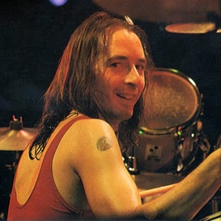

Steve Perry
Cantante
Perry se convirtió en una voz referencia durante su estancia con Journey
Neil Schon
Guitarrista
Jonathan Cain
Pianista/Tecladista
Compositor de éxitos como Open Arms y Who's Crying Now
Ross Valory
Bajista
Valory ha tocado el bajo en todos los álbumes de Journey hasta la fecha

Steve Smith
Baterista
Se caracteriza por combinar las formas rítmicas del rock con las formas creativas del jazz.